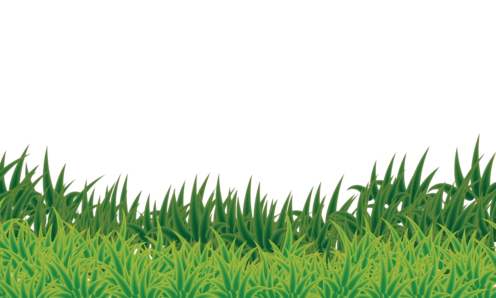

Begin your composting journey by choosing a dry, shaded spot near a water
source.
Close
Use a compost bin or create a pile. Start with coarse materials for
airflow.
Close
This next step is crucial. Make sure you start your compost with the right
mix of materials: greens (like food scraps and grass clippings) and browns
(like dried leaves, cardboard, and paper). Balancing these layers ensures
healthy decomposition and nutrient-rich soil.
Close
Turn the pile weekly to aerate and maintain moisture like a damp sponge.
Close
When your compost is dark and crumbly with an earthy smell, it’s ready to
use in your garden!
Close